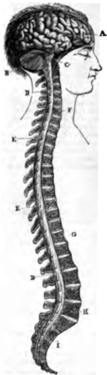
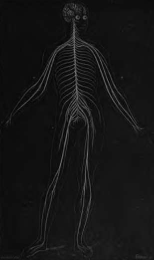

Human Brain
Description
This section is from the book "Wonders Of The Human Body", by Auguste Le Pileur. Also available from Amazon: Wonders of the Human Body.
Human Brain
This is the term commonly applied to all the parts of the encephalon, which are the brain proper, or cerebrum, the cerebellum, or little brain; the isthmus of the encephalon, or the attachment which joins the different parts together; and the bulb of the spinal cord, or medulla oblongata.
Fig. 29. Cerebro spinal nervous centre.
The brain occupies nearly all the cavity of the cranium, which fits it like a mould. It is oval in form, flattened on its inferior surface, which rests on the base or floor of the skull; its anterior or frontal extremity is smaller than the posterior. Its greatest transverse diameter is the space between the temporal fossæ. It is divided in the median line by the great fissure running from behind forward vertically through part of its depth into two portions, called the hemispheres of the brain. This division is complete in front, at the back and on the top, but the two parts are united at the middle and lower third by the corpus callosum, the peduncles, and some other parts situated in the middle line.
A lateral fissure, called the fit in some species of animals, but none approaches man in the size of the brain proper. If man holds the first rank in creation, he owes his position to this admirable instrument of the soul, to this mysterious medium between the external world and the thinking being.
A. Cerebrum—or brain proper.
B. Cerebellum—letter brain.
C. Pons Varolii.
D, D. Spinal marrow, showing the origin of the spinal nerves.
E, E. spinous processes of the vertebra.
F. Seventh cervical vertebra.
G. Twelfth dorsal vertebra.
H. Fifth lumbar vertebra. I. Sacrum.
Fig. 30. Nervous System.
The volume of the brain is considerable from the first stages of existence, and larger in proportion in the newborn infant than in the adult It is independent of sex and of the size of individuals. The weight of the brain in the adult varies, according to Cruveilhier, from 35 oz. to 52 oz.
The brain is symmetrical, but less constantly so than some other portions of the nervous centre, and there is often a notable disproportion between the two hemispheres without there having been any indication whatever of it during life. This want of symmetry was very marked in the brain of Bichat, and this is a striking proof that such a conformation does not necessarily have an unfavourable influence on the intellectual faculties, as was thought by this illustrious anatomist.
The cerebellum or little brain lies in the inferior occipital fossæ, that is to say, in the posterior and inferior portion of the cranium, and it is covered by the posterior lobes of the cerebrum. It is an ellipsoid in form, flattened from the top downward, with its large extremity behind, and its greater diameter transverse. It is symmetrical, and is composed of a middle lobe and two lateral lobes or hemispheres.
On the upper surface of the cerebellum is a protuberance, extending from the front backwards; it is formed by the middle lobe, and named from its peculiar appearance the superior vermiform process. The lateral lobes form an inclined plane on either side.
The lower surface fits into the occipital fossæ, and forms two rounded lobes separated by a furrow, which widens in front to receive the spinal bulb. About the middle of it is seen the inferior vermiform process, the lower surface of the middle lobe which unites the two hemispheres.
The whole surface of the cerebellum is furrowed with curved and projecting lines, which give it a wrinkled appearance (fig. 32, p. 124). These lines or folds are all of about the same width, and are parallel through a portion of their course, and then they form acute angles, and are collected in fascicles, which point transversely downward or backward, and divide the hemispheres into segments, which are divided and subdivided into layers.
The cerebellum is composed, like the cerebrum, of white and gray substance, with the addition of a yellowish substance interposed in layers between the two others. Each hemisphere is formed of a central nucleus, around which the segments develop themselves. The layers of these segments are in juxtaposition like the leaves of a book; the white substance is in the centre; then comes a layer of the yellow matter, and over these the gray substance. If we make a vertical section of the cerebellum, the alternating layers of the three substances of which it is composed are seen forming a series of ramifications which spring from a common trunk: this has been named the arbor vita or tree of life (fig. 33, p. 126). At the nucleus or knot, the peduncles of the cerebellum terminate; they are three in number on either side, and serve to attach it to the other parts of the encephalon. Near the point where these different parts unite, there is a cavity which is partly circumscribed by the peduncles of the cerebellum; this is called the fourth ventricle, or ventricle of the cerebellum. It communicates with the third ventricle of the cerebrum by the canal of Sylvius.
Continue to: